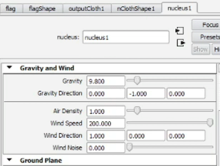
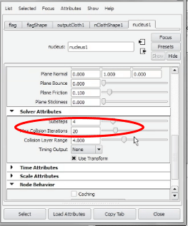
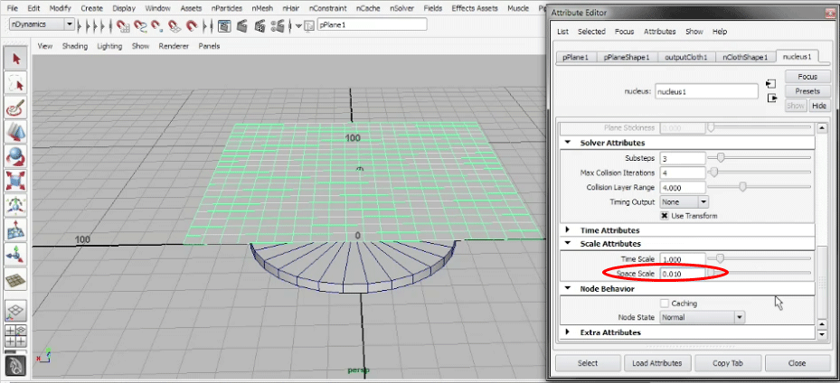
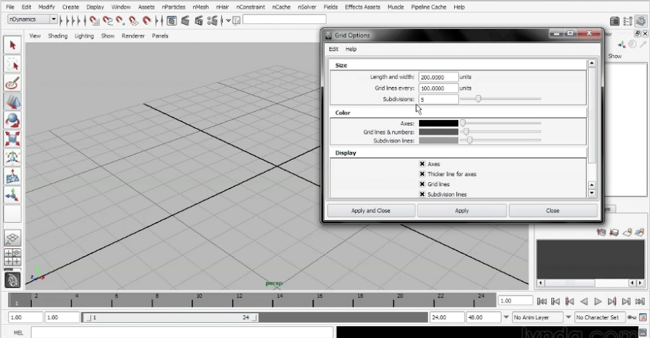
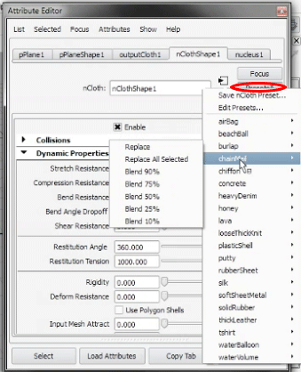
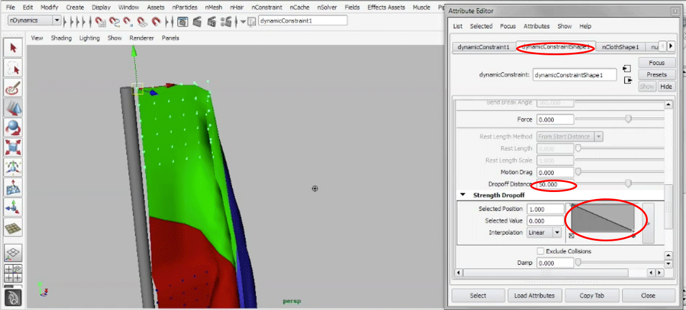
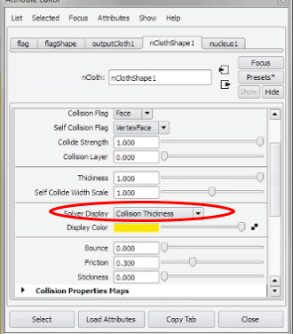
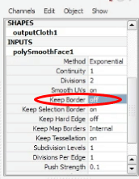

Maya
3D software
UI Changes
Docking Windows
Click drag a window to move and arrage. If you pop out a window, double click the tab to redock the window. The channel box, attribute editor(Ctrl+A) now have icons on the top right screen to show them.
Nucleus
Understand Basic
You usually have one nucleus, but you can have multiple. One nucleus will be linked to multple objects in the scene using dynamics, such as a flag, cloth, etc. Nucleus controls all the basic gravity, window, turbulence etc for all objects in the scene.
Nucleus has it's own ground plane if you wish to use it, just turn it on in this attribute editor.
Wind
Just increase the wind speed and direction to start affecting nucleus objects.
Interactive Playback
Allows you to adjust wind speed stuff in real time while playing. Make sure to have enough time in timeline. Sovler > interactive playback.
Fine Turning Solver
Nucleus node > solver attribute > sbutsteps or max collision iterations increase if you have problems with say a flag folder in the wind. You'll have to fine tune for each scene. Downside is that playback will become slower. When it becomes too slow, make a playblast video instead to see the animation. playblast will be common.
nCloth
Understand Scale
Maya simulations assumes you build your object as 1/100 scale. not 1:1 scale as the size may be too big to build a city. If you do build it at 1:1 scale (only good for small objects), you'll have to up the scale attribute in nucleus to simulate the correct gravity. Select Nucleus obj in scene > scale attributes > change 1.0 to .01
Or you can change the gravity(not recommended), move decimal two places to the right to get a bigger gravity.
Start scene by changing grid size > Display > Grid > up the grid scale so it's bigger to model in.
Create nCloth
nCloth only works with polygons. Give cloth square polygons subdivision as much as possible. Freeze transform plane after cloth creation. Scale should b 1,1,1. create a copy before turning plane into nCloth. Once you nCloth an obj, it's hard to revert it back so make copy of it. select a plane > make it ncloth.
Change nucleus scale size if needed depending if you built obj 1:1 ratio or not. When you play simulation, if your object is moving too slow, then the object is too big.
Change time setting to player every everyframe (if there's issuet try 24 but not recommended). Which ever one that will solve when you hit play. It should be play every frame, but if every frame is not working, reset your entire maya preferences. Set your timeline to 100. Click play.
Ncloth Presets
Maya ships with a lot of presets for you to simulate different cloths. Use the presets on the nClothShape node and click hold on presets > replace. Start with presets, then tweak to your liking.
Best preset for table cloth is burlap, then tweak the passive object's friction to 1.0. ClothShape node friction to 4 and stickiness to 1.0 or higher.
Constraints
Make object nCloth > select vertices > nConstraints > trannsform > apply. A locator will be created for you. Play simulation. When selecting multiple vertex, after creating constraint, you may want to move the constarint locator to another corner or place where the snap should be most solid at.
To add more vertext to a pre-existing constraint. Select constraint > shft select cloth > vertex > select more vertex > nConstraints > add member
Drop off in constaints helps smooth the strength of constraints at the locator. Modify these values under the constaintNode
To constraint ncloth to nçloth, you want to select vertices on both nCloth objects, and select component to component. You won't get a locator for this type of constraint
Bake Simulation no Cache
Baking simulation xyz rotation, scale, and translation. Edit > set key > bake simulation. select the channels you want to key.
Bake Simulation with cache
For cloth that deform dynamically, you want to cache it instead of bake. Set your time line to how far you want to cache. then Cache. Once cache, to change simulation like wind speed, you must delete the cache.
Click cloth object, nCache > create cache. Caching will start. After cache, you can scroll the timeline at will and get same result. Then you can proceed to render.
Cloth intersection fix
Make sure the cloth thickness is high, under the clothShape node.

Turn on collision thickness envelope display view to see better of the thickness
Render Prep
The cloth can be smoothed a couple of ways. Method 1 and cheap way is pressing 3 then use mental ray to render. the 3 smooth key will not work for other renders other than mental ray. CACHE the simulation before you render it!!!
For old school method and to use software or hardward, you have to use the mesh > smooth under polygons. Select cloth > apply mesh smooth > then under the smooth node on the mesh > Make sure to turn off keep border to have smoother edges.
set Initial State
Instead of starting from a square shape cloth to solve, you can simulate and start from a different cloth shape after it has been deform. Select cloth > nSolver > set from current. Rewind timeline and the shape should start from that initial state. If you want another state, go to that timeline, and set from current again.
To clear initial state and go back > nSolver > clear inital state
Multiple NCloth
For optimization, disable ncloth that are not needed when simulating other ncloths. Select ncloth object > uncheck enable in the nClothShape node.
You can create a rope using nCloth. Transform constraint one or two end of rope. Use t-shirt preset, and change stretch resistance to 1000.
Rigging
Cheat Sheet
- All joints should have y facing outward and x pointing in the direction of the next bone
- Use the skeleton > orient joint tool > to fix local axes rotation
- Not all bones need to connect to the root bone
- Not all bones need to conect
- One nurb ctrl for each IK > point constraint ctrl to ik
- consider a spline technique for best rotation control.
- rotate can also use a orient constraint, from ctrl to bone
- One main nurbs circle controller that will move the entire character. All controllers are child of this node.
- never not parent bones to the main ctrl, use sub ctrls instead
- Always create nurbs circles for controls
- Freeze transform every ctrl before constraining, should have all values zeroed out
Animation
- Do not key the main controller at all
- Only use main controller to set the starting position and set maybe only one key there
- make two key points on the sub ctrl (ex: hip_ctrl) at start to finish location, best way to setup starting animation
- animate one ctrl at a time and try to use post-cycle if can, while incrementing timeline every x frames
Blendshapes
- blendshapes are good, but a jointbase system would be better for games and star wars production like, as new characters, can take on the same skeletal hiearcy or easier to transfer the same rig to another character. Joint base system is ultimately the best.
- Use blendshapes for facial or detail surface animation
- Select all blendshapes and then select target face and apply blend shapes
- You can use skeleton joints and paint weights to help with jaw blendshapes. If you do this way, make sure to manually shft select the only joints you want, then the face, then tweak the smooth bind option. the default smooth bind to selected joints. skinning fit is class linear (workds with game engines). leave normalize weights into interactive (keeps mesh from exploding. Maintain max influence is off (allow to paint zero value). apply and test skinning. Key two or more sample key frames by rotating the joint needed. Flood the base joint 1 value the entire surface. then move from there to the next joints to apply lower values. then add morphed blendshape to the target shape.
- you can insert inbetween blendshapes for finer details